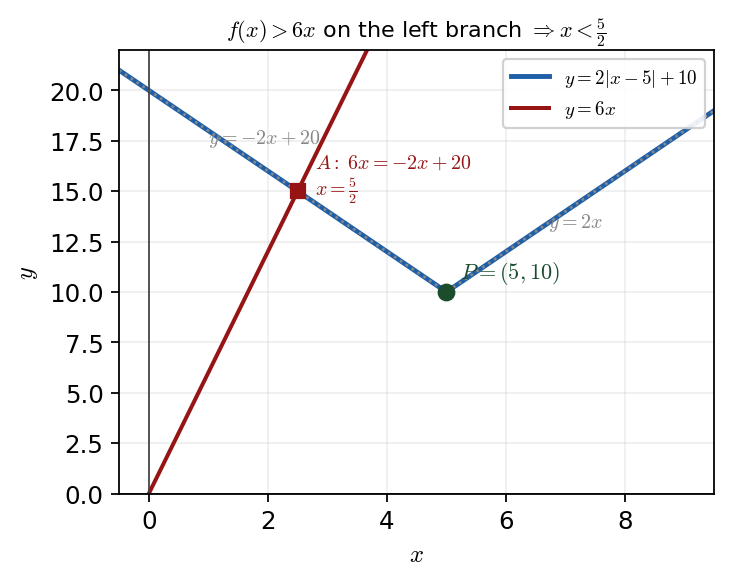

Harry → Phuc • 12 July 2026 tutorial
P3 WMA13/01 — June 2024 — Q1Q1 · Modulus \(f(x)=2|x-5|+10\): vertex, inequality, transformation

The V-graph \(y=2|x-5|+10\): left branch \(y=-2x+20\), right branch \(y=2x\), vertex \(P=(5,10)\). \(f(x)>6x\) on the left branch, up to \(A\) where \(6x=-2x+20\Rightarrow x=\tfrac52\).
Status: fully worked in the lesson — \(P=(5,10)\), \(x<\tfrac52\), image \((7,30)\).
Part (a) · Coordinates of \(P\)Solved
Hide workingStrategy
Split the modulus into its two branches, then read off / substitute to get the vertex.
Working · piecewise form
\[ f(x)=\begin{cases} 2x, & x\ge 5\ (\text{since } 2(x-5)+10=2x),\\ -2x+20, & x<5\ (\text{since } -2(x-5)+10=-2x+20). \end{cases} \]
Substitute the vertex \(x=5\)
\[ f(5)=2|5-5|+10=2|0|+10=10 \;\Rightarrow\; P=(5,10). \]
Shortcut Harry gave
The vertex of \(y=a|x-h|+k\) is \((h,k)\), so \(f(x)=2|x-5|+10\) has vertex \((5,10)\) directly.
Phuc did this well (recorded): Phuc derived the piecewise function and marked \(x=5\) at the vertex, then substituted \(x=5\) into \(f(x)=2|x-5|+10\) to get \(f(5)=10\) — correct.
Part (b) · Solve \(2|x-5|+10>6x\) by algebraSolved
Carry-inFrom (a): vertex \(P=(5,10)\); right branch \(y=2x\), left branch \(y=-2x+20\).
Hide workingStrategy
Think graphically first to pick the right branch, then solve by algebra (the calculator is not allowed here). Sketch \(y=6x\): it is steeper than the right branch \(y=2x\), so \(f(x)>6x\) only on the
left branch.
Working · intersect the left branch with \(y=6x\)
\[ 6x=-2x+20 \;\Rightarrow\; 8x=20 \;\Rightarrow\; x=\frac{20}{8}=\frac52. \]
Read off the region
To the left of this intersection the V-graph is above \(y=6x\); to the right it drops below. Hence the solution set.
Sense check
At \(x=0\): \(f(0)=20>0=6x\) ✓ (inside); at \(x=3\): \(f(3)=14<18=6x\) ✗ (outside). Boundary \(x=\tfrac52\) is where they are equal.
Phuc's slips (recorded): Phuc made an earlier numerical error and also solved an unnecessary second case (the right branch). Harry's point: a quick sketch of \(y=6x\) against the V shows only the left branch can exceed \(6x\), so only \(6x=-2x+20\) needs solving.
Part (c) · Image of \(P\) under \(y=3f(x-2)\)Solved
Carry-inFrom (a): \(P=(5,10)\).
Hide workingStrategy
Apply the two transformations in \(y=3f(x-2)\) to the vertex only: the \((x-2)\) shifts right, the outer factor \(3\) stretches vertically.
Working · horizontal shift
\(x-2\) replaces \(x\): the graph moves
right by \(2\), so the \(x\)-coordinate \(5\to 5+2=7\).
Working · vertical stretch
The factor \(3\) multiplies \(y\): the \(y\)-coordinate \(10\to 3\times 10=30\).
Sense check
Order is independent here: the horizontal translation acts on \(x\), the vertical stretch on \(y\), so \((5,10)\to(7,30)\).
Phuc did this (recorded): This was a part Phuc had previously left blank; with the transformation rules \((x-2)\Rightarrow\) right \(2\) and \(3f\Rightarrow\) \(y\)-stretch \(3\), he reached \((7,30)\).
Exam tip Harry stressed: if you cannot do an early part (e.g. finding \(P\)), invent a plausible value and carry it forward — you can still earn full method marks on the later part. Harry stressed this twice in the lesson.